Code
try:
import fysisk_biokemi
print("Already installed")
except ImportError:
%pip install -q "fysisk_biokemi[colab] @ git+https://github.com/au-mbg/fysisk-biokemi.git#subdirectory=course-utils"try:
import fysisk_biokemi
print("Already installed")
except ImportError:
%pip install -q "fysisk_biokemi[colab] @ git+https://github.com/au-mbg/fysisk-biokemi.git#subdirectory=course-utils"import numpy as npEvaluate the following expressions using Python
Recall that the basic arithemetic operations are, in Python, represented as follows
+-/*x**y10.5 * 4
5 + 10 + 15 + 12
70 - 30 + 2
420 / 1042.0The ability to perform operations on all elements (or data points) is incredibly useful when doing data analysis, for example when converting units. This is enabled my array calculations.
The cell below defines an array \(a\) with all the numbers from 0 to 9.
For each entry \(a_i\) in the array calculate the expression \(b_i = a_i / 3 + a_i^2\) and assign that to a new array \(b\). use the fact that you can do elementwise operations with an array - do not calculate it seperately for every element of the array.
a = np.arange(0, 10)b = a / 3 + a**2
print(b)[ 0. 1.33333333 4.66666667 10. 17.33333333 26.66666667
38. 51.33333333 66.66666667 84. ]With an array all the basic arithemtic operations can do be done elementwise, so the expression \(x^2 + 1\) can be done for all elements in an array as such
x = np.arange(0, 10)
y = x**2 + 1Just like if x was just a single number. Similarly, expressions be involve adding arrays together like
y = x**2 + xVariables are an essential part of a program. Calculate the following where each intermediate is assigned to a variable
\[ \begin{aligned} a &= 5 \times 3 \\ b &= a + 9 \\ c &= \frac{4}{3}a + b - 2 \end{aligned} \]
a = 5 * 3
b = a + 9
c = 4/3*a + b - 2
print(a, b, c)15 24 42.0Bonus question: Why does c print as a decimal number when the others print without decimals?
Parentheses are important, a misplaced or lacking parentheses can drastically change a calculation.
Using the variables a, b and c you calculate in the previous exercise, evaluate the following expressions
q1 = a * (b + c)
q2 = a * b + c
q3 = (a + b + c) / (b + c)
q4 = (b - a)*(1/c + 1)
q5 = (b - a)*(1/(c+1)+1)
print(q1, q2, q3, q4, q5)990.0 402.0 1.2272727272727273 9.214285714285714 9.209302325581396If you’re in doubt having an extra set of unecessary parentheses is better than missing a necessary set of parentheses. Just be careful to place them correctly.
For repeated computations it’s good practice to define a function.
Define a function that calculates the following expression
\[ f(x) = \frac{Ax + B + C}{A + B} \]
Where \(A = 10\), \(B=5\), \(C=2.5\)
def fun_function(x):
return (10*x + 5 + 2.5) / (10 + 5)Now evaluate the function for \(x = 62.5\), \(x = 629.25\), \(x=42\) and \(x = 2025\)
fun_output_1 = fun_function(62.25)
fun_output_2 = fun_function(629.25)
fun_output_3 = fun_function(42)
fun_output_4 = fun_function(2025)
print(f"{fun_output_1:.1f}")
print(f"{fun_output_2:.1f}")
print(f"{fun_output_3:.1f}")
print(f"{fun_output_4:.1f}")42.0
420.0
28.5
1350.5The input of a function will often be the independent variable and the functions calculates the independent variable.
Later when we get to regression/fitting this will be the case.
import numpy as np
import matplotlib.pyplot as pltThere are many ways to plot, we will be using the matplotlib library - but the concepts are similar across most ways of plotting.
We can make a plot of a straight line between two points \((x_1, y_1)\) and \((x_2, y_2)\) like so;
x = np.array([1, 2]) # This array contains all the x-coordinates
y = np.array([0, 1]) # And this contains all the y-coordinates.
fig, ax = plt.subplots(figsize=(6, 4))
ax.plot(x, y)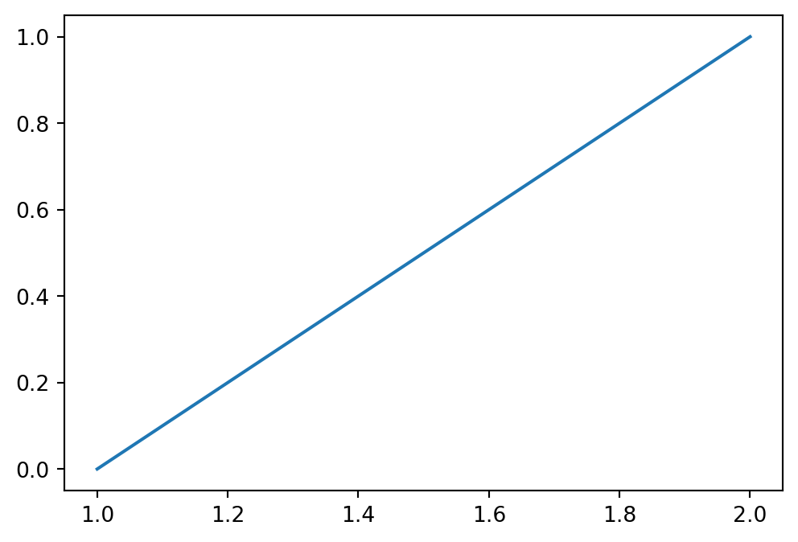
ax is a special type (like int, float, str), you can think of it as the box that contains the plot.
If we want to connect to a third point \((x_3, y_3)\) we would instead write
x = np.array([1, 2, 2.5])
y = np.array([0, 1, 2])
fig, ax = plt.subplots(figsize=(6, 4))
ax.plot(x, y)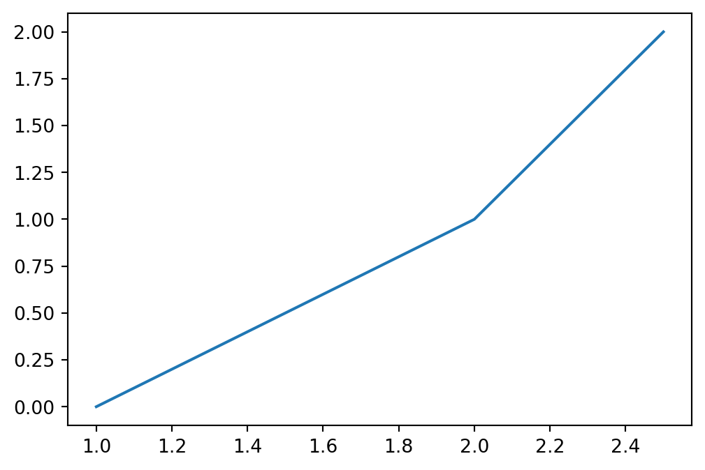
Notice that with three sets of points we plot two line segments.
Make a plot with lines between the following 4
Start by defining an array for both x and y
x = np.array([0, 1, 1, 0])
y = np.array([0, 0, 1, 1])Now use ax.plot to make the plot
fig, ax = plt.subplots(figsize=(5, 5))
ax.plot(x, y)
ax.axis('equal')
ax.set_xlim([-0.5, 1.5])
ax.set_ylim([-0.5, 1.5])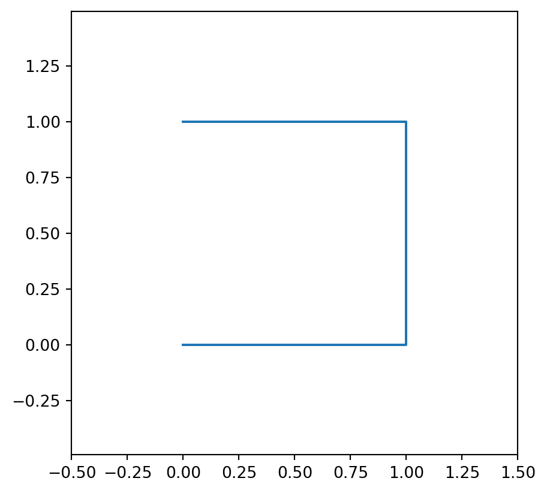
Consider the following;
In order to actually plot a square you will need to update x and y, they both need to contain five numbers such that four line segments are plotted.
x = np.array([0, 1, 1, 0, 0])
y = np.array([0, 0, 1, 1, 0])Copy your code for making the plot from the previous exercise to the cell below
fig, ax = plt.subplots(figsize=(5, 5))
ax.plot(x, y)
ax.axis('equal')
ax.set_xlim([-0.5, 1.5])
ax.set_ylim([-0.5, 1.5])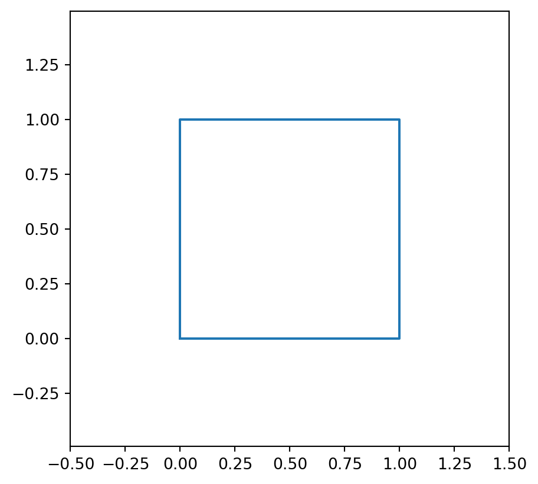
Often the data we plot can broadly be thought of as originating from a function, that is we have
\[ y = f(x) \]
Where \(f\) is the function, this might for example be an experiment that produces some output \(y\) given some input \(x\) or it might be a traditional mathematical function like \(y = x^2\). Plotting this type of data is exactly the same as plotting a square - it just usually consists of many more data points resulting in many line segments producing a smooth looking curve.
Make a plot of the function
\[ y = \mathrm{e}^x \]
The exponential function can be calculated using np.exp - likewise with the logarithm np.log.
x = np.linspace(0, 5, 50) # Make 50 points uniformly between 0 and 5.
y = np.exp(x) # Calculate y from x.
fig, ax = plt.subplots(figsize=(6, 4))
ax.plot(x, y)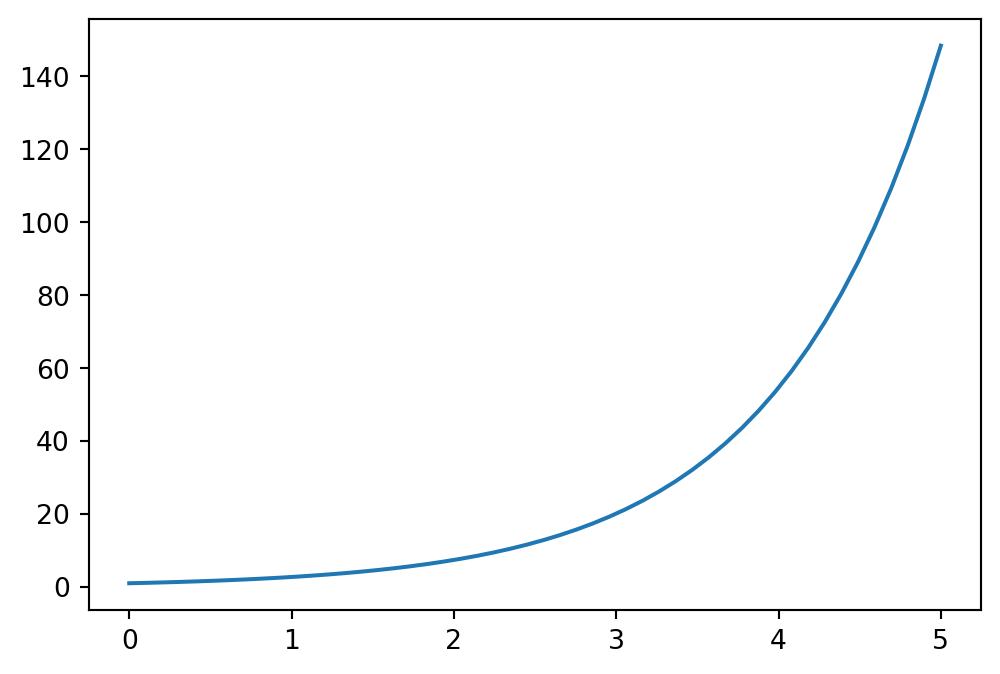
Once you’ve made the plot try changing the number of points in x by changing the last argument in the call to np.linspace.
Remember that np.exp is used to calculate the exponential function.
Often we want to plot multiple functions in the same figure as it enables us to compare them. Luckily, this is quite simple!
Plot the function
\[ y = \mathrm{e}^{ax} \]
With \(a = \left[1, \cfrac{1}{2}, 1.2\right]\) in the same plot producing three curves.
x = np.linspace(0, 5, 50) # Make 50 points uniformly between 0 and 5.
y1 = np.exp(1*x)
y2 = np.exp(0.5*x)
y3 = np.exp(1.2*x)
fig, ax = plt.subplots(figsize=(6, 4))
ax.plot(x, y1)
ax.plot(x, y2)
ax.plot(x, y3)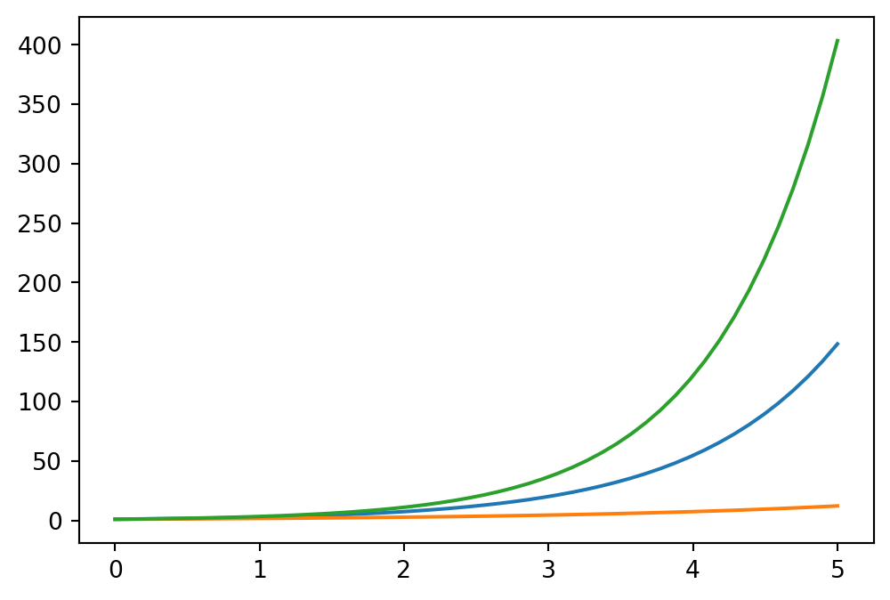
We will generally need to customize plots a little bit, for example the plot from the previous exercise doesn’t have a label for the axis, there’s no way of telling which curve is which and it has no title.
To add labels to the x and y axis we use the two functions
ax.set_xlabel('String with the name of the x-axis')ax.set_ylabel('String with the name of the y-axis')Adding information about the curves we plot can be done by also giving them a label, that is done as an argument to the ax.plot call, like so
label argument is given when the curve is plotted.
ax.legend() is called to tell matplotlib to show the a ‘legend’ containing the label of all the plots that have been given one.
Copy your code from the previous exercise and add labels for both the x and y axis aswell as each curve, for example you can label them according to the value of the the parameter \(a\) like a = 1 etc.
... # Put some code here and try customizing it.Ellipsisx = np.linspace(0, 5, 50) # Make 50 points uniformly between 0 and 5.
y1 = np.exp(1*x)
y2 = np.exp(0.5*x)
y3 = np.exp(1.2*x)
fig, ax = plt.subplots(figsize=(6, 4))
ax.plot(x, y1, label='a = 1')
ax.plot(x, y2, label='a = 1/2')
ax.plot(x, y3, label='a = 1.2')
# Customization:
ax.set_xlabel('x')
ax.set_ylabel('y')
ax.legend()
ax.set_title('Plots of exponential functions')Text(0.5, 1.0, 'Plots of exponential functions')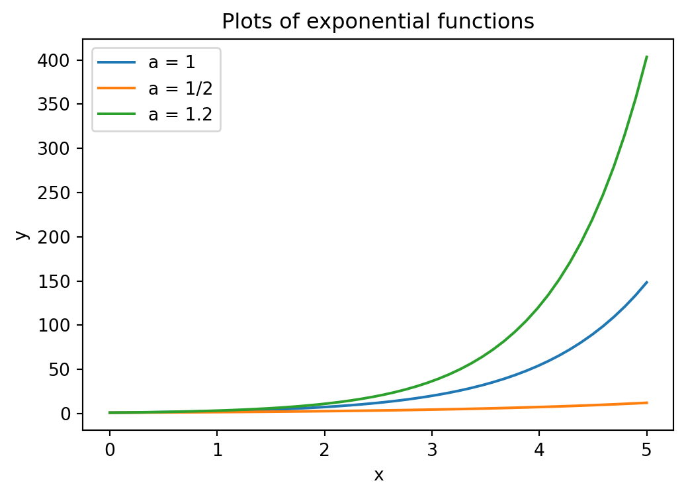
There are many other customization options that can be added in the same way as the label, that is
ax.plot(x, y, option_name=option_value)Some useful examples are
linestyle: Controls if the plot is made using a full, dashed or dotted line using -, -- and : respectively. So ax.plot(..., ..., linestyle = ":") produces a dotted line.color: Controls the color of the line - valid options are listed here https://matplotlib.org/stable/gallery/color/named_colors.htmllinewidth: Sets the width of the line - can be any number.alpha: Controls the transparency of the plot 0 being fully transparent and 1 being fully visible.You can try some of these options for the plot you’ve made above if you want to. There are many other ways of customizing plots for different situations. The matplotlib gallery shows a number of them.
Sometimes we don’t want to connect each point with a line segment but just show the points in a scatter plot.
The next cell makes some data
x = np.random.uniform(low=0, high=10, size=100)
y = 2*x + np.random.normal(scale=2, size=100)Try plotting it like for the previous exercises
fig, ax = plt.subplots()
ax.plot(x, y)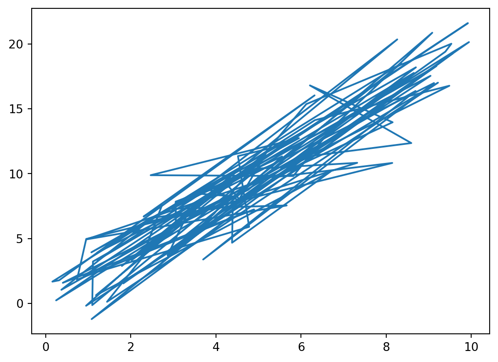
You will see a very strange plot like when you scribble out a word on a piece of paper. Clearly a line plot is not a very good way of showing this data! There are, at least, two ways of making a scatter plot
ax.plot(x, y, 'o'): Quick and dirty way of just showing the points and not the lines.ax.scatter(x, y): Function specifically for making these types of plots - with its own set of customization arguments.Try either, or both, of these ways in the cell below
fig, ax = plt.subplots()
ax.scatter(x, y, s=100, label='ax.scatter', facecolor='orange', edgecolor='black', linewidth=1)
ax.plot(x, y, 'o', label='ax.plot', color='mediumpurple', markersize=4)
ax.legend()
ax.set_xlabel('x')
ax.set_ylabel('y')
ax.set_title('Scatter plot in two ways.')
plt.show()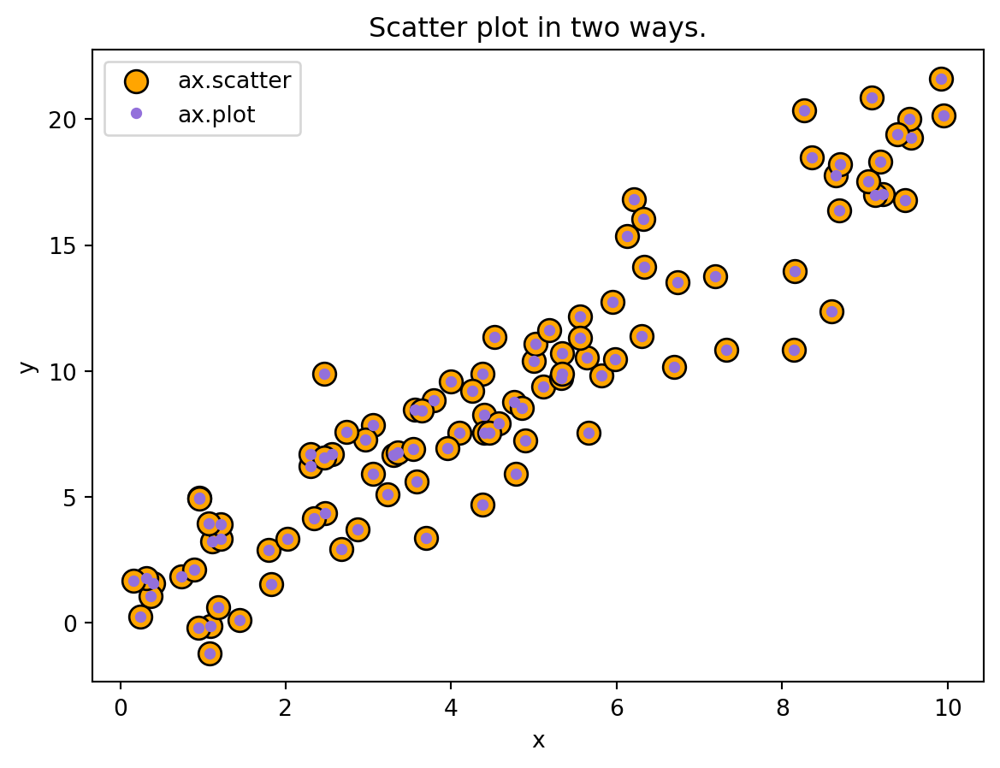
import numpy as npIn the accompanying Excel file (averag-prope-amino-acids.xlsx), you will find a table that contains the molecular weight of the 20 common amino acid residues, i.e. their weight as residues in a peptide chain. Additionally, you will find their relative frequency in E. coli proteins, where a frequency of 0.01 means that this residue constitutes 1 % of the residues in a protein.
Use the widget below to load the averag-prope-amino-acids.xlsx file.
from IPython.display import display
from fysisk_biokemi.widgets import DataUploader
uploader = DataUploader()
uploader.display()The command below will display the table as a DataFrame.
df = uploader.get_dataframe()
display(df)from IPython.display import display
from fysisk_biokemi.datasets import load_dataset
df = load_dataset('AA_frequency')
display(df)| Name | MW of AA residue | Frequency in proteins | |
|---|---|---|---|
| 0 | Alanine (Ala/A) | 71.08 | 0.074 |
| 1 | Arginine (Arg/R) | 156.19 | 0.042 |
| 2 | Asparagine (Asn/N) | 114.11 | 0.044 |
| 3 | Aspartic acid (Asp/D) | 115.09 | 0.059 |
| 4 | Cysteine (Cys/C) | 103.15 | 0.033 |
| 5 | Glutamic acid (Glu/E) | 129.12 | 0.058 |
| 6 | Glutamine (Gln/Q) | 128.13 | 0.037 |
| 7 | Glycine (Gly/G) | 57.05 | 0.074 |
| 8 | Histidine (His/H) | 137.14 | 0.029 |
| 9 | Isoleucine (Ile/I) | 113.16 | 0.038 |
| 10 | Leucine (Leu/L) | 113.16 | 0.076 |
| 11 | Lysine (Lys/K) | 128.18 | 0.072 |
| 12 | Methionine (Met/M) | 131.20 | 0.018 |
| 13 | Phenylalanine (Phe/F) | 147.18 | 0.040 |
| 14 | Proline (Pro/P) | 97.12 | 0.050 |
| 15 | Serine (Ser/S) | 87.08 | 0.081 |
| 16 | Threonine (Thr/T) | 101.11 | 0.062 |
| 17 | Tryptophan (Trp/W) | 186.22 | 0.013 |
| 18 | Tyrosine (Tyr/Y) | 163.18 | 0.033 |
| 19 | Valine (Val/V) | 99.13 | 0.068 |
Calculate the average molecular weight of a residue in a protein. To do this our procedure will be as follows
In the cell below finish the calculation of weight_times_freq by extracting the "MW of AA residue"-column and "Frequency in proteins" and multiplying them together.
You can index in the dataframe by using the column name, for example to get the "MW of AA residue"-column you would do
col = df["MW of AA residue"]Arrays also allows us to operate on every element in the array at the same time, so arrays can be added, subtracted, multiplied, divided, etc, see for example this figure


weight_times_freq = df['MW of AA residue'] * df['Frequency in proteins']You can use np.sum to sum all values in an array. For example
array = np.array([1, 2, 3, 4, 5])
sum_of_array = np.sum(array) # Gives 15 average_mw = np.sum(weight_times_freq)
print(f"{average_mw = :.3f}")average_mw = 110.566The syntax f"{average_mw = :.3f}" is just a way of printing the value with a nicer format, in this case we print the value to 3 decimal places. In Python these are called f-strings, you don’t need to understand the details at the moment.
What would the molecular weight of a 300-residue protein most likely be, if you did not know its sequence?
mw_300 = average_mw * 300
print(f"{mw_300 = :.3f}")mw_300 = 33169.941In many projects, you will be working with a mixture of proteins. This could for example be a cell lysate or a biological fluid for protein abundance analysis, or the early stages of a protein purification process. In these situations, you cannot work with a molecule specific extinction coefficient. Instead, we would use the average values, which we will determine below.
In many cases, we work with mixtures of proteins that do not have a defined molar extinctio coefficient. Instead, we work with an average ‘mass extinction coefficient’, which we will deduce here.
Calculate the average concentration of amino acid residues in a protein mixture at 1 mg/mL.
c_residue_avg = 1 / average_mw
print(f"{c_residue_avg = :3.3f} M")c_residue_avg = 0.009 MCalculate the absorbance from such a mixture under the assumption that only Trp and Tyr contribute.
freq = df.set_index("Name")["Frequency in proteins"]
f_trp = freq["Tryptophan (Trp/W)"]
f_tyr = freq["Tyrosine (Tyr/Y)"]
c_trp = c_residue_avg * f_trp
c_tyr = c_residue_avg * f_tyr
print(f"{c_trp = :3.5f}")
print(f"{c_tyr = :3.5f}")c_trp = 0.00012
c_tyr = 0.00030L = 1 # Path length
A280_1mg_pr_ml = L * (5500 * c_trp + 1490 * c_tyr)
print(f"{A280_1mg_pr_ml = :3.3f}")A280_1mg_pr_ml = 1.091In the compendium, we mentioned a “rule of thumb” that 1 mg/mL protein at a path length of 1 cm has an A280 = 1. How well does this compare to your calculated value?
For a cell lysate, you measure and absorbance of 0.78 at a path length of 0.5 cm. What is the protein concentration?
# Set known values:
A = 0.78 # Unitless
l = 0.5 # cm
# Calculate concentration:
conc_mg_pr_mL = A / (A280_1mg_pr_ml * l)
print(f"Protein concentration = {conc_mg_pr_mL:.3f} mg/mL")Protein concentration = 1.429 mg/mLimport matplotlib.pyplot as pltIn this exercise we will analyze the spectra of apo- and holo-myoglobin. The dataset is given in uv-spec-apo-holo-myo.csv.
Use the widget to load the dataset.
from IPython.display import display
from fysisk_biokemi.widgets import DataUploader
uploader = DataUploader()
uploader.display()Run this cell after having uploaded the file in the cell above.
df = uploader.get_dataframe()
display(df)from fysisk_biokemi.datasets import load_dataset
from IPython.display import display
df = load_dataset('apo_holo') # Load from package for the solution so it doesn't require to interact.
display(df)| wavelength | holo_absorbance | apo_absorbance | |
|---|---|---|---|
| 0 | 240 | 0.863073 | 0.455787 |
| 1 | 241 | 0.679118 | 0.404028 |
| 2 | 242 | 0.575443 | 0.365380 |
| 3 | 243 | 0.520933 | 0.337692 |
| 4 | 244 | 0.486763 | 0.318813 |
| ... | ... | ... | ... |
| 246 | 486 | 0.069077 | 0.033136 |
| 247 | 487 | 0.068888 | 0.033136 |
| 248 | 488 | 0.068391 | 0.033136 |
| 249 | 489 | 0.067608 | 0.033136 |
| 250 | 490 | 0.066691 | 0.033136 |
251 rows × 3 columns
To plot we use the matplotlib package. Plots are generally just straight lines connecting points, with enough points we get a smooth looking figure.
For example, to plot a line connecting three datapoints
fig and an ax, the ax-object is the box where our plot is created.
There are many ways of customizing plots, you will see different ones in the exercises, but by no means all of them - if you are interested you can find more information on the matplotlib documentation.
You don’t have to worry about the NaN values in the dataset when plotting, matplotlib just skips plotting that line segment.
Using matplotlib plot each spectrum in the same figure as line plots.
fig, ax = plt.subplots()
ax.plot(df['wavelength'], df['holo_absorbance'], label='Holo')
ax.plot(df['wavelength'], df['apo_absorbance'], label='Apo')
ax.set_ylabel('Absorbance (AU)')
ax.set_xlabel('Wavelength (nm)')
ax.legend()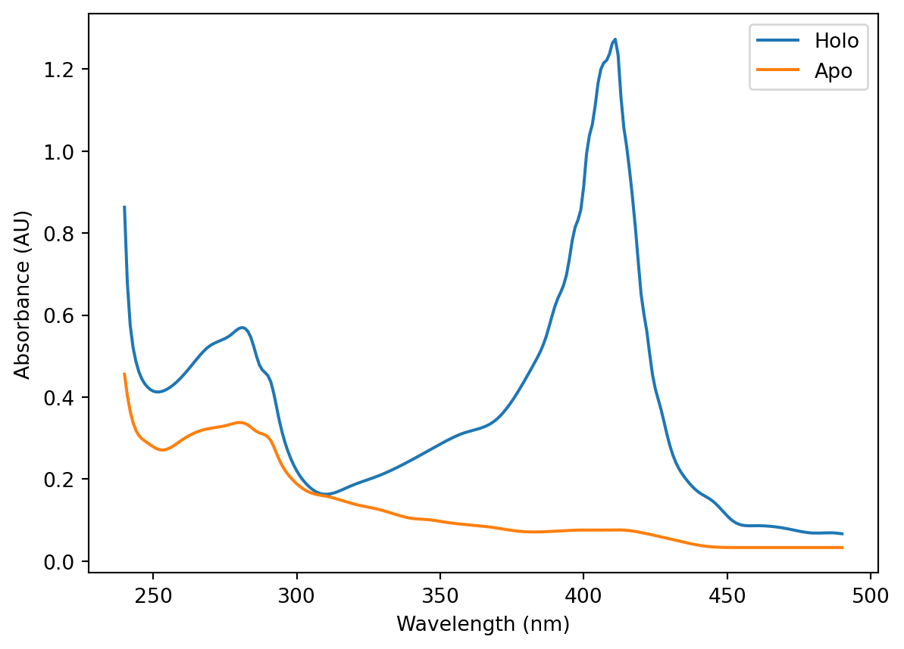
Based on the spectra explain what ApoMb and HoloMb represent?
"""
ApoMb (Apo-myoglobin): Myoglobin without its heme prosthetic group.
"Apo" means the protein portion lacking its cofactor.
HoloMb (Holo-myoglobin): Complete myoglobin with the heme group bound.
"Holo" means the whole, functional protein with its cofactor.
The spectra show that HoloMb has strong visible light absorption due to
the heme group, while ApoMb lacks this characteristic absorption.
"""You have learned that pure proteins without any UV/Vis-absorbing prosthetic groups bound, have basically no absorbance at wavelengths above λ>320 nm. Nevertheless ApoMb still show some absorbance above 320 nm. In this case, it can explained by the fact that ApoMb was generated from HoloMb by a procedure that will not be explained here.
Explain why ApoMb in the spectrum above absorbs light at λ>320 nm.
"""
As ApoMb was generated from HoloMb, the ApoMb sample might still be contaminated
with some HoloMb
"""Give a rough estimate of the efficiency of the chosen procedure of heme-group removal. You may wish to look at the numerical values in the DataFrame.
"""
Compare the percentage by which the absorbance decreases at 410 nm ~94% removal efficiency.
"""Are there any isobestic points between the two spectra?
"""
Yes at around 300-310 nm.
"""To get a better understanding of the causes for the different spectra, you can compare to litterature. The figure below shows the absorbance spectra of three states of myoglobin.
\[ \begin{aligned} \mathrm{MbFe(II)O_2} &\Rightarrow \mathrm{oxyMb} \\ \\ \mathrm{MbFe(III)} &\Rightarrow \mathrm{metMb} \\ \\ \mathrm{MbFe(II)} &\Rightarrow \mathrm{deoxyMb} \end{aligned} \]

metMb \((\mathrm{MbFe(III)})\) is normally described as ‘aged’ myoglobin. What does this mean in terms of the bound iron?
"""In the aged state, the oxidation number of the iron is +3. The change in
oxidation number of iron (+2 vs +3) in fresh vs aged myoglobin means that the
electron configuration in the d- orbitals are different, which will affect the
way iron is bound in the heme group"""Give a qualitative explanation to the observed change in absorbance of metMb compared to fresh oxy-/deoxyMb?
"""
The changed in electronic configuration and the difference this causes to how
iron is bound in the hemegroup influences the absorption.Moreover binding of
oxygen via the iron again changes the electron configuration of the iron atom,
resulting in differences between deoxy- and oxymyoglobin
"""Is the spectral difference from deoxyMb to metMb a redshift or a blueshift?
"""
The absorbance peak in metMb is at lower wavelength (higher energy) as compared
to deoxyMb, and is therefore described as a blueshift.
"""You would like to set up an experiment where the absorbance of myoglobin at defined wavelength(s) should be used to measure the level of \(\mathrm{O}_2\) binding. Sketch how the absorbance spectra would look like when going from deoxyMb and continuously increasing the concentration of \(\mathrm{O}_2\) (draw this for five different \(\mathrm{O}_2\) concentrations going from pure deoxyMb to pure oxyMb)
In this exercise we will learn how Python is excellent for handling datasets with many data points and how it can be used to apply the same procedure to all the data points at once.
A researcher wants to determine the concentration of two proteins in blood plasma that is suspected to be involved in development of an autoimmune disease. 500 patients and 500 healthy individuals were included in the study and absorbance measurements of the two purified proteins from all blood plasma samples were measured at 280 nm. The molecular weight and extinction coefficients of the two proteins are given in the table below.
| Protein | \(M_w\) \([\text{kDa}]\) | \(\epsilon\) \([\text{M}^{-1}\text{cm}^{-1}]\) |
|---|---|---|
| 1 | 130 | 180000 |
| 2 | 57 | 80000 |
Use the widget to load the dataset as a dataframe from the file protei-blood-plasma.xlsx
from IPython.display import display
from fysisk_biokemi.widgets import DataUploader
uploader = DataUploader()
uploader.display()Run this cell after having uploaded the file in the cell above.
df = uploader.get_dataframe()
display(df)from fysisk_biokemi.datasets import load_dataset
from IPython.display import display
df = load_dataset('protein_blood_plasma') # Load from package for the solution so it doesn't require to interact.
display(df)| A280_protein1_healthy | A280_protein1_patient | A280_protein2_healthy | A280_protein2_patient | |
|---|---|---|---|---|
| 0 | 0.086241 | 0.014437 | 0.035768 | 0.034756 |
| 1 | 0.095333 | 0.014813 | 0.040662 | 0.040242 |
| 2 | 0.091058 | 0.014119 | 0.039344 | 0.032946 |
| 3 | 0.105004 | 0.014430 | 0.041232 | 0.032568 |
| 4 | 0.097421 | 0.014083 | 0.035860 | 0.036829 |
| ... | ... | ... | ... | ... |
| 495 | 0.090870 | 0.015723 | 0.031065 | 0.031464 |
| 496 | 0.084912 | 0.014091 | 0.036573 | 0.037934 |
| 497 | 0.097572 | 0.014300 | 0.043926 | 0.046982 |
| 498 | 0.096186 | 0.014589 | 0.040299 | 0.036045 |
| 499 | 0.079806 | 0.013657 | 0.030360 | 0.041318 |
500 rows × 4 columns
Calculate the molar concentration of the two proteins in all samples, the light path for every measurement is 0.1 cm.
Always a good idea to assign known values to variables
protein_1_ext_coeff = 180000
protein_2_ext_coeff = 80000
l = 0.1You can set new columns in a DataFrame by just assigning to it
df['new_column'] = [1, 2, 3, ..., 42]It can also be set as a computation of a property from another row
df['new_column'] = df['current_column'] / 4df['protein1_healthy_molar_conc'] = df['A280_protein1_healthy'] / (protein_1_ext_coeff * l)
df['protein1_patient_molar_conc'] = df['A280_protein1_patient'] / (protein_1_ext_coeff * l)
df['protein2_healthy_molar_conc'] = df['A280_protein2_healthy'] / (protein_2_ext_coeff * l)
df['protein2_patient_molar_conc'] = df['A280_protein2_patient'] / (protein_2_ext_coeff * l)
display(df)| A280_protein1_healthy | A280_protein1_patient | A280_protein2_healthy | A280_protein2_patient | protein1_healthy_molar_conc | protein1_patient_molar_conc | protein2_healthy_molar_conc | protein2_patient_molar_conc | |
|---|---|---|---|---|---|---|---|---|
| 0 | 0.086241 | 0.014437 | 0.035768 | 0.034756 | 0.000005 | 8.020679e-07 | 0.000004 | 0.000004 |
| 1 | 0.095333 | 0.014813 | 0.040662 | 0.040242 | 0.000005 | 8.229321e-07 | 0.000005 | 0.000005 |
| 2 | 0.091058 | 0.014119 | 0.039344 | 0.032946 | 0.000005 | 7.844136e-07 | 0.000005 | 0.000004 |
| 3 | 0.105004 | 0.014430 | 0.041232 | 0.032568 | 0.000006 | 8.016667e-07 | 0.000005 | 0.000004 |
| 4 | 0.097421 | 0.014083 | 0.035860 | 0.036829 | 0.000005 | 7.824074e-07 | 0.000004 | 0.000005 |
| ... | ... | ... | ... | ... | ... | ... | ... | ... |
| 495 | 0.090870 | 0.015723 | 0.031065 | 0.031464 | 0.000005 | 8.734877e-07 | 0.000004 | 0.000004 |
| 496 | 0.084912 | 0.014091 | 0.036573 | 0.037934 | 0.000005 | 7.828086e-07 | 0.000005 | 0.000005 |
| 497 | 0.097572 | 0.014300 | 0.043926 | 0.046982 | 0.000005 | 7.944444e-07 | 0.000005 | 0.000006 |
| 498 | 0.096186 | 0.014589 | 0.040299 | 0.036045 | 0.000005 | 8.104938e-07 | 0.000005 | 0.000005 |
| 499 | 0.079806 | 0.013657 | 0.030360 | 0.041318 | 0.000004 | 7.587346e-07 | 0.000004 | 0.000005 |
500 rows × 8 columns
Add another set of four columns containing the concentrations in mg/mL.
protein_1_mw = 130 * 10**3
protein_2_mw = 57 * 10**3df['protein1_healthy_conc'] = df['protein1_healthy_molar_conc'] * protein_1_mw
df['protein1_patient_conc'] = df['protein1_patient_molar_conc'] * protein_1_mw
df['protein2_healthy_conc'] = df['protein2_healthy_molar_conc'] * protein_2_mw
df['protein2_patient_conc'] = df['protein2_patient_molar_conc'] * protein_2_mw
names = ['protein1_healthy_conc', 'protein1_patient_conc', 'protein2_healthy_conc', 'protein2_patient_conc']
display(df[names])| protein1_healthy_conc | protein1_patient_conc | protein2_healthy_conc | protein2_patient_conc | |
|---|---|---|---|---|
| 0 | 0.622848 | 0.104269 | 0.254843 | 0.247635 |
| 1 | 0.688519 | 0.106981 | 0.289719 | 0.286724 |
| 2 | 0.657640 | 0.101974 | 0.280328 | 0.234740 |
| 3 | 0.758361 | 0.104217 | 0.293781 | 0.232050 |
| 4 | 0.703593 | 0.101713 | 0.255503 | 0.262408 |
| ... | ... | ... | ... | ... |
| 495 | 0.656283 | 0.113553 | 0.221338 | 0.224181 |
| 496 | 0.613251 | 0.101765 | 0.260580 | 0.270276 |
| 497 | 0.704688 | 0.103278 | 0.312970 | 0.334749 |
| 498 | 0.694673 | 0.105364 | 0.287130 | 0.256823 |
| 499 | 0.576373 | 0.098635 | 0.216312 | 0.294390 |
500 rows × 4 columns
Now that we have the mass concentrations, calculate the mean mass concentration in the four categories.
When displaying the dataframe above we indexed it with names as df[names]. We can do the same to compute something over just the four rows.
For example the if we have a DataFrame called example_df, we can calculate the mean over the rows as:
example_df[names].mean(axis=0)Here axis=0 means that we apply the operation over the first axis which by convention are the rows. The figure below visualizes this

mean = df[names].mean(axis=0)
display(mean)protein1_healthy_conc 0.677316
protein1_patient_conc 0.104155
protein2_healthy_conc 0.242293
protein2_patient_conc 0.256983
dtype: float64Calculate the standard deviation
The standard deviation can be calculated using the .std-method that works in the same way as the .mean-method we used above.
std = df[names].std(axis=0)
display(std)protein1_healthy_conc 0.107141
protein1_patient_conc 0.005458
protein2_healthy_conc 0.040127
protein2_patient_conc 0.052373
dtype: float64Consider the following questions
"""The concentration of protein1 is much lower in patients compared to the healthy
individuals, whereas protein2 is basically the same. This suggests that the loss of
protein1 was some how involved in the disease, although you cannot conclude causality
from a correlation. However, you might be able to use it as a biomarker to diagnose
whether an individual had the disease. In this case, you only need correlation,
not causation. Examples of this would include prostate specific-antigen (PSA),
which is routinely used to screen for prostate cancer."""'The concentration of protein1 is much lower in patients compared to the healthy\nindividuals, whereas protein2 is basically the same. This suggests that the loss of\nprotein1 was some how involved in the disease, although you cannot conclude causality \nfrom a correlation. However, you might be able to use it as a biomarker to diagnose\nwhether an individual had the disease. In this case, you only need correlation, \nnot causation. Examples of this would include prostate specific-antigen (PSA), \nwhich is routinely used to screen for prostate cancer.'"""The standard deviations provide information about the natural variation in protein
levels. This will be important for deciding whether a difference between the two
groups compared is reliable. For a larger natural variation, tyou will need a
larger difference between the groups or a a larger sample size (number of patients tested)
to conclude a difference is significant. You will return to this in a more formal
setting in statistics classes later in your studies."""'The standard deviations provide information about the natural variation in protein \nlevels. This will be important for deciding whether a difference between the two \ngroups compared is reliable. For a larger natural variation, tyou will need a \nlarger difference between the groups or a a larger sample size (number of patients tested)\nto conclude a difference is significant. You will return to this in a more formal \nsetting in statistics classes later in your studies.'The protein of human myoglobin is given below
sequence = """GLSDGEWQLVLNVWGKVEADIPGHGQEVLIRLFKGHPETLEKFDKFKHLKSEDEMKASEDLKKHGA
TVLTALGGILKKKGHHEAEIKPLAQSHATKHKIPVKYLEFISECIIQVLQSKHPGDFGADAQGAMNKALELFRKDMASNY
KELGFQG"""We want to calculate the extinction coefficient of this protein, we have seen that this can be calculated using the formula
\[ \epsilon(280 \mathrm{nm}) = N_{Trp} \epsilon_{Trp} + N_{Tyr} \epsilon_{Tyr} + N_{Cys} \epsilon_{Cys} \tag{1}\]
Where \(N_{Trp}\) is the number of Tryptophan in the protein (and likewise for the other two terms), and the three constants \(A\), \(B\) and \(C\) are given as
\[ \begin{align} \epsilon_{Trp} &= 5500 \ \mathrm{M^{−1} cm^{−1}} \\ \epsilon_{Tyr} &= 1490 \ \mathrm{M^{−1} cm^{−1}} \\ \epsilon_{Cys} &= 125 \ \mathrm{M^{−1} cm^{−1}} \end{align} \]
In order to calculate the formula we need to know the count of the relevant residues, we can use Python to get that - for example we can count the number of Tryptophan like so;
N_trp = sequence.count("W")In the cell below find the number of residues
N_tyr = sequence.count("Y")
N_cys = sequence.count("C")You can check what Python has stored each variable by using print
print(N_trp)
print(f"{N_tyr = }") # This is just a way of make a string that looks nice.
print(f"{N_cys = }")2
N_tyr = 2
N_cys = 1Use equation (Equation 1) to calculate the extinction coefficient of human myoglobin.
eps_trp = 5500
eps_tyr = 1490
eps_cys = 125epsilon = eps_trp * N_trp + eps_tyr * N_tyr + eps_cys*N_cys
print(epsilon)14105What are the units of this value?
ProtParam is an online tool that calculates various physical and chemical parameters from a given protein sequence and is used worldwide in research laboratories.

Go to ProtPram at this link: https://web.expasy.org/protparam/ and paste the sequence and click Compute Parameters. You should then see the calculated parameters, similar to in the image below

On the output page you will see a calculated extinction coefficient. Does that match your calculation? If not, what is the different between the assumptions made?
Using the extinction coefficient and the molecular weight given by ProtParam, calculate the absorbance at 280 nm of a myoglobin solution at a concentration of 1 mg/mL in a cuvette with a light path of 1 cm.
molecular_weight = 17052.61
path_length = 1 # cm
concentration = 1 # mg/mLRemember to convert the concentration to \(\mathrm{mol/L}\).
A280 = concentration / molecular_weight * path_length * epsilon
print(A280)0.827146108425631This value is what is known as the A280(0.1%) of a protein, i.e. the absorbance of a given protein at a concentration of 0.1% weight/volume (= 1 g/L = 1 mg/mL).
We have now calculated the extinction coefficient of a protein, now we will make our code more reusable so that it can be applied to other proteins easily.
A function in Python is a set of instructions, like a recipe, that can be defined and reused multiple times. The syntax is like this
def command is used to define the functions name, here my_function, and state its inputs, e.g. the name and ingredients of a recipe.
return something, like the final product of a recipe.
Note that the function is not executed by doing this, like how a cake isn’t baked by writing down the recipe, in order actually use the function it needs to be called
output = my_function(1, 2)This is also how we have already used other functions like print.
The way of doing so is by defining a function that does the necessary operations for a given sequence. In this way the code can be reused for any sequence.
Finish implementing the body of the function below, note that you have already written all the required code - you just need to copy it into the function.
def extinction_coefficient(sequence):
# Start by counting:
N_trp = sequence.count("W")
N_tyr = sequence.count("Y")
N_cys = sequence.count("C")
# Define the residue extinction coeffiecients
eps_trp = 5500
eps_tyr = 1490
eps_cys = 125
# Calculate
epsilon = eps_trp * N_trp + eps_tyr * N_tyr + eps_cys*N_cys
return epsilonIt’s always a good idea to check that functions do what we expect, so we can confirm that it gives the same result for human myoglobin as we calculated before
epsilon_func = extinction_coefficient(sequence)
print(f"Epsilon: {epsilon}")
print(f"Epsilon from function: {epsilon_func}")Epsilon: 14105
Epsilon from function: 14105The largest known protein is Titin, the cell below loads the sequence of titin and prints a few bits of information about it. (You can also find the full sequence in the dataset extin-coeff-human-myogl.txt.)
from fysisk_biokemi.datasets import load_dataset
titin_sequence = load_dataset('titin')
print(f'Titin number of residues: {len(titin_sequence)}')
print('First 100 residues')
print(titin_sequence[0:100])Titin number of residues: 34922
First 100 residues
MTTQAPTFTQPLQSVVVLEGSTATFEAHISGFPVPEVSWFRDGQVISTSTLPGVQISFSD
GRAKLTIPAVTKANSGRYSLKATNGSGQATSTAELLVKAUse your function to calculate the extinction coefficient of titin.
titin_eps = extinction_coefficient(titin_sequence)
print(titin_eps)4115635You don’t need to understand the code below, it’s just ment to illustrate that knowing some Python will allow you to explore the topics that interest you in more detail.
In general Python is very powerful at letting us explore properties of sequences, for example the cell below calculates number of residues between each Tryptophan in the Titin sequence and plot the distribution.
import numpy as np
import matplotlib.pyplot as plt
def get_distance(sequence, letter):
W_index = np.argwhere(np.array([l for l in sequence]) == letter)
count = len(W_index)
distance = (W_index - np.roll(W_index, 1))[1:]
return distance, count
letters = ['W', 'Y', 'C']
fig, axes = plt.subplots(1, 3, figsize=(3*3, 3), sharey=True)
axes = axes.flatten()
for ax, letter in zip(axes, letters):
distance, count = get_distance(titin_sequence, letter)
ax.hist(distance, bins=np.arange(0, 500, 25),
edgecolor='black', alpha=0.75, density=True)
ax.set_xlabel('Distance [Number of residues]')
info = f'Residue: {letter} \nCount: {count} \nMean distance: {np.mean(distance):.1f}'
ax.text(0.975, 0.975, info, transform=ax.transAxes, ha='right', va='top')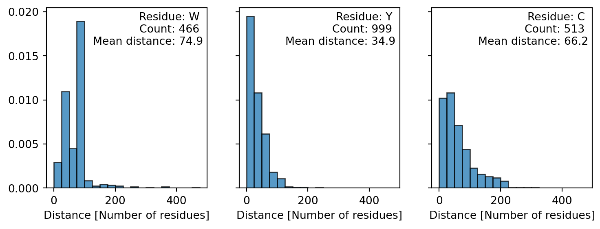
from fysisk_biokemi.datasets import load_dataset
from IPython.display import display
import matplotlib.pyplot as plt
import numpy as np
import pandas as pd
pd.set_option('display.max_rows', 6)You investigate a protein that neither contains tyrosine nor cysteine residues. A 37 µM solution gives an absorbance of 0.41 at 280nm at a light path of 1 cm.
How many tryptophan residues does the protein contain?
You would like to conduct a protein stability experiment at an absorbance of 0,8 (path length 1cm). What concentration should you use?
The cell below loads extinction and emission spectra for tryptophan in aqueous buffer. (The data files are trypt-absor-fluor-emission.xlsx and trypt-absor-fluor-extinction.xlsx)
df_emission = load_dataset('week47_1_emi')
df_extinction = load_dataset('week47_1_ext')
display(df_emission)
display(df_extinction)| wavelength_(nm) | emission_(AU) | |
|---|---|---|
| 0 | 280.0 | 379 |
| 1 | 280.5 | 396 |
| 2 | 281.0 | 403 |
| ... | ... | ... |
| 396 | 478.0 | 5024 |
| 397 | 478.5 | 4950 |
| 398 | 479.0 | 4813 |
399 rows × 2 columns
| wavelength_(nm) | molar_extinction_(cm-1/M) | |
|---|---|---|
| 0 | 219.75 | 12488 |
| 1 | 220.00 | 12872 |
| 2 | 220.25 | 12428 |
| ... | ... | ... |
| 396 | 318.75 | 14 |
| 397 | 319.00 | 18 |
| 398 | 319.25 | 45 |
399 rows × 2 columns
Make plot showing the two spectra
fig, axes = plt.subplots(1, 2, figsize=(7, 3), layout='constrained')
# Emission
ax = axes[0]
ax.set_title('Emission')
ax.plot(df_emission['wavelength_(nm)'], df_emission['emission_(AU)'], label='Emission', color='C0')
ax.set_ylabel('Emission')
ax.set_xlabel('Wavelength [nm]')
# Extinction
ax = axes[1]
ax.set_title('Extinction')
ax.plot(df_extinction['wavelength_(nm)'], df_extinction['molar_extinction_(cm-1/M)'], label='Extinction', color='C1')
# Customization
ax.set_ylabel('Extinction')
ax.set_xlabel('Wavelength [nm]')
plt.show()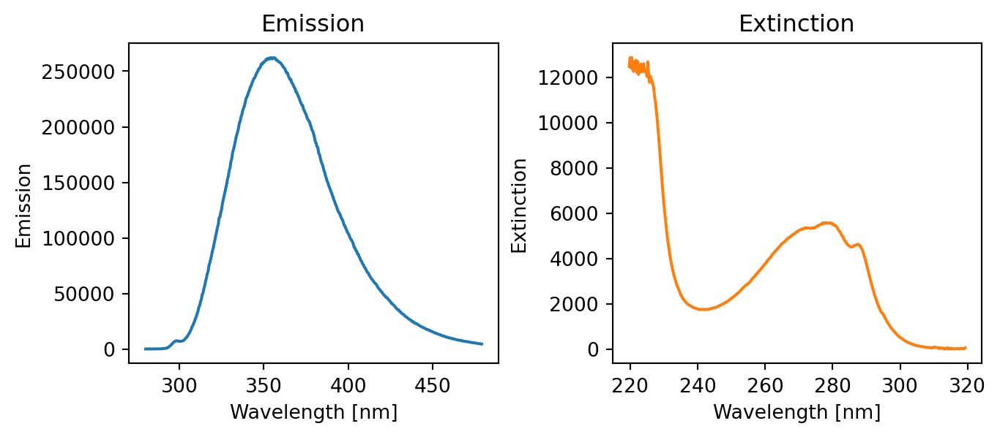
From the plot estimate the Stokes shift
estimated_stokes_shift = 30Compare your estimated Stokes shift to the output of the cell below that computes the stokes shift.
max_index = np.argmax(df_emission['emission_(AU)'])
emission_wavelength_max = df_emission['wavelength_(nm)'][max_index]
max_index = np.argmax(df_extinction['molar_extinction_(cm-1/M)'])
extinction_wavelength_max = df_extinction['wavelength_(nm)'][max_index]
stokes_shift = emission_wavelength_max - extinction_wavelength_max
print(f"{emission_wavelength_max = :.1f} nm")
print(f"{extinction_wavelength_max = :.1f} nm")
print(f"{stokes_shift = :.1f} nm")
print(f"{estimated_stokes_shift = :.1f} nm")emission_wavelength_max = 354.0 nm
extinction_wavelength_max = 220.5 nm
stokes_shift = 133.5 nm
estimated_stokes_shift = 30.0 nmNext, you compare the fluorescence emission spectra for your protein at pH 7 and at pH 2. You can find the data in the files trypt-absor-fluor-ph2.xlsx and trypt-absor-fluor-ph7.xlsx - the cell below also loads these datasets.
The datasets are loaded in a different way than you’ve seen before - as help to you as this exercise deals with multiple datasets. The datasets could also be loaded with the widget you’ve seen before
df_ph2 = load_dataset('week47_1_ph2')
df_ph7 = load_dataset('week47_1_ph7')
display(df_ph2, df_ph2)| Wavelength(nm) | Fluo_Int | |
|---|---|---|
| 0 | 311.623037 | 0.890000 |
| 1 | 314.450262 | 1.128668 |
| 2 | 315.863874 | 1.128668 |
| ... | ... | ... |
| 43 | 367.068063 | 27.990971 |
| 44 | 368.638743 | 27.313770 |
| 45 | 370.052356 | 26.636569 |
46 rows × 2 columns
| Wavelength(nm) | Fluo_Int | |
|---|---|---|
| 0 | 311.623037 | 0.890000 |
| 1 | 314.450262 | 1.128668 |
| 2 | 315.863874 | 1.128668 |
| ... | ... | ... |
| 43 | 367.068063 | 27.990971 |
| 44 | 368.638743 | 27.313770 |
| 45 | 370.052356 | 26.636569 |
46 rows × 2 columns
Make a plot comparing the two emission spectra. Which resembles the spectrum of tryptophan in water most?
fig, ax = plt.subplots()
ax.plot(df_ph2['Wavelength(nm)'], df_ph2['Fluo_Int'], label='pH = 2')
ax.plot(df_ph7['Wavelength(nm)'], df_ph7['Fluo_Int'], label='pH = 7')
ax.set_xlabel('Wavelength [nm]')
ax.set_ylabel('Flouresence [AU]')
ax.legend()
plt.show()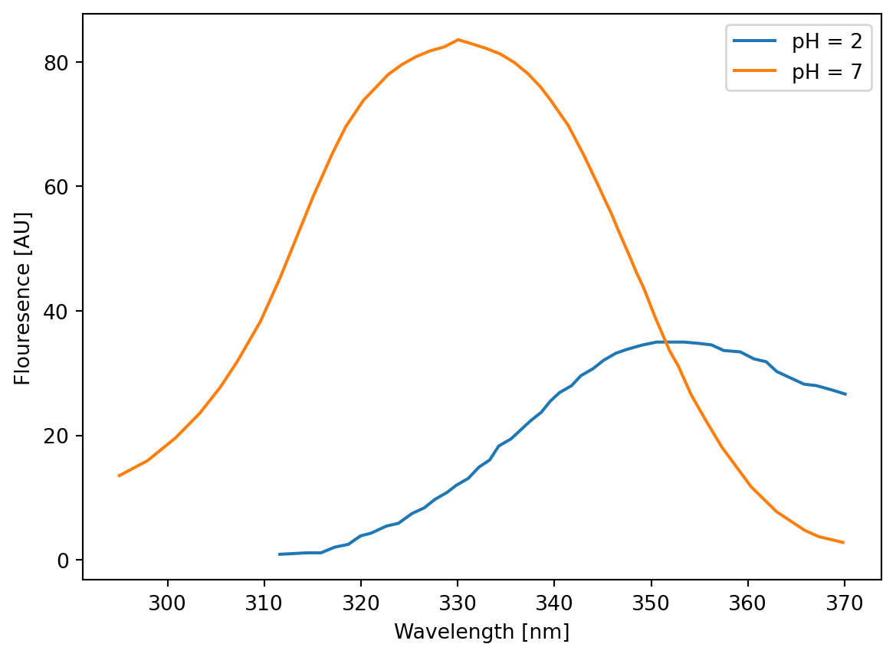
Explain why the same protein gives such different spectra at pH 2 and pH 7.
"""
The protein unfolds at acidic pH. Therefore the Trp residues are exposed to water
at pH 2, but buried in the hydrophobic core (and thus blue-shifted) at pH 7
"""The spectra of many fluorescent proteins can be found at the website: www.fpbase.org. Go to FPbase and search for “mCherry”.
Find the following parameters for the protein
Save them to seperate variables in the cell below.
QY = 0.22
EC = 72000 # [1/(M cm)]
organism = "Discosoma sp."
m_w = 26.7 * 10**3 # From fpbaseWhat is the absorbance of a 1 µM solution of mCherry at its absorption maximum at a path length of \(1 \ \mathrm{cm}\)?
c = 1 * 10**(-6) # [M]
l = 1 # [cm]
A_max = EC * c * l
print(f"{A_max = :3.3f}")A_max = 0.072We will treat the sequence as a str, like any other text, str’s are defined like
one_line_string = "This is some text, that makes up my string."Which uses "-quotation marks around the text, for longer strings it can be useful to instead use
multi_line_string = """This is a very long text, so long in fact that it
takes up multiple lines and I therefore use a slightly different syntax.
To make the string longer I will confess that I am hungry right now.
"""The sequence of the protein is also given. From this determine the extinction coefficient at 280 nm.
Start by taking the sequence from the website and assigning it to the variable sequence in the cell below.
sequence="""MVSKGEEDNM AIIKEFMRFK VHMEGSVNGH EFEIEGEGEG RPYEGTQTAK LKVTKGGPLP FAWDILSPQF MYGSKAYVKH PADIPDYLKL SFPEGFKWER VMNFEDGGVV TVTQDSSLQD GEFIYKVKLR GTNFPSDGPV MQKKTMGWEA SSERMYPEDG ALKGEIKQRL KLKDGGHYDA EVKTTYKAKK PVQLPGAYNV NIKLDITSHN EDYTIVEQYE RAEGRHSTGG MDELYK"""Now use the sequence to calculate the extinction coefficient, finish the code below (or take the function you implemented in a previous exercise!)
# This is 'dictionary' with the extinction coefficients of the relevant
# amino acid residues. Dictionaries are indexed with 'keys', so you can retrieve
# the value for W as: ext_residue["W"].
ext_residue = {"W": 5500, "Y": 1490, "C": 125}
# Count the number of active residues
N_trp = sequence.count("W")
N_tyr = sequence.count("Y")
N_cys = sequence.count("C")
# Calculate the extinction coefficient:
ext_coeff = N_trp * ext_residue["W"] + N_tyr * ext_residue["Y"] + N_cys * ext_residue["C"]
print(f"{ext_coeff = :3.3f}")ext_coeff = 34380.000What is the molar concentration of solution of mCherry with an A_280nm of 0.45
A280 = 0.45
c_mol = A280 / (ext_coeff)
print(c_mol)1.3089005235602094e-05The excitation and emission spectra can be downloaded as a csv-file by clicking the download icon as highlighted below

Go to www.fpbase.org and download the spectrum as described above.
Use the widget below to load the dataset as a DataFrame
from fysisk_biokemi.widgets import DataUploader
from IPython.display import display
uploader = DataUploader()
uploader.display()Run the next cell after uploading the file
df = uploader.get_dataframe()
display(df)from IPython.display import display
from fysisk_biokemi.datasets import load_dataset
df = load_dataset('mCherry') # Load from package for the solution so it doesn't require to interact.
display(df)| wavelength | mCherry ex | mCherry em | mCherry 2p | |
|---|---|---|---|---|
| 0 | 300 | 0.1320 | NaN | NaN |
| 1 | 301 | 0.1175 | NaN | NaN |
| 2 | 302 | 0.1063 | NaN | NaN |
| ... | ... | ... | ... | ... |
| 1097 | 1397 | NaN | NaN | 0.0 |
| 1098 | 1398 | NaN | NaN | 0.0 |
| 1099 | 1399 | NaN | NaN | 0.0 |
1100 rows × 4 columns
Make your own plot showing the excitation and emission spectra of “mCherry” using the above data.
import matplotlib.pyplot as plt
fig, ax = plt.subplots(figsize=(9, 4))
ax.plot(df['wavelength'], df['mCherry ex'], label='Excitation')
ax.plot(df['wavelength'], df['mCherry em'], label='Emission')
ax.legend()
ax.set_xlabel('Wavelength')
ax.set_ylabel('Extinction & Emission')
plt.show()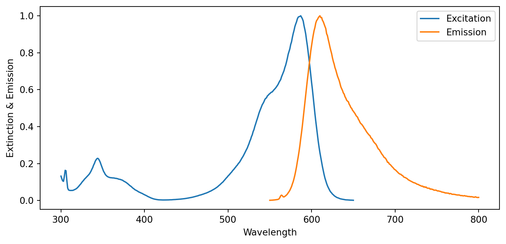
Estimate the Stokes shift of mCherry from the plot.
estimated_stokes_shift = 30 # Your estimationThe cell below shows how this could calculated using Python
import numpy as np
# Start by extracting the wavelengths from the DataFrame
wavelengths = df['wavelength']
# Find the indices
ex_max_idx = np.argmax(df['mCherry ex'])
em_max_idx = np.argmax(df['mCherry em'])
# Use the index to find the corresponding wavelengths
lambda_ex = wavelengths[ex_max_idx]
lambda_em = wavelengths[em_max_idx]
stokes_shift = lambda_em - lambda_ex
print(f"{lambda_ex = :d}")
print(f"{lambda_em = :d}")
print(f"{stokes_shift = :d}")
print(f"{estimated_stokes_shift = :d}")lambda_ex = 587
lambda_em = 610
stokes_shift = 23
estimated_stokes_shift = 30If you have two arrays A and B you can find the entry in A corresponding to the largest value in B like this
A_at_B_max = A[np.argmax(B)]The np.argmax stands for argument maximum meaning that it finds the index of the maximum value in a given array. The figure below illustrates this

Compare to a plot of the visual spectrum. What colors are the light that corresponds to the excitation and emission maxima respectively?
Why do you think the protein is called Cherry?